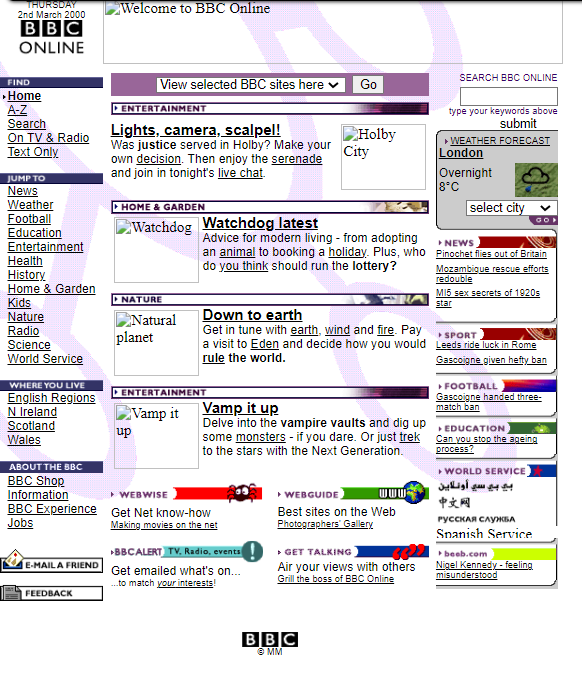
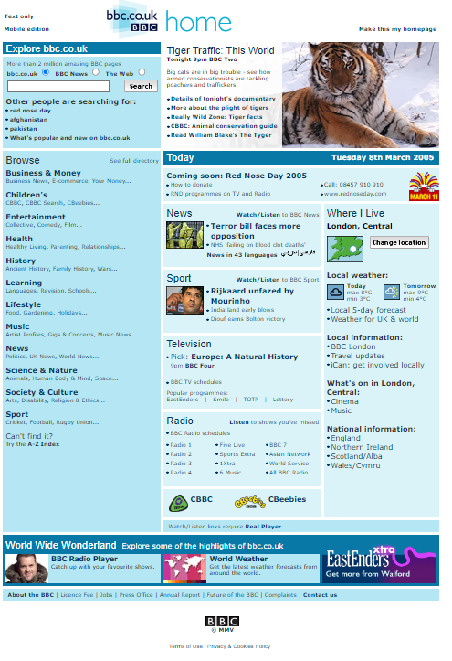
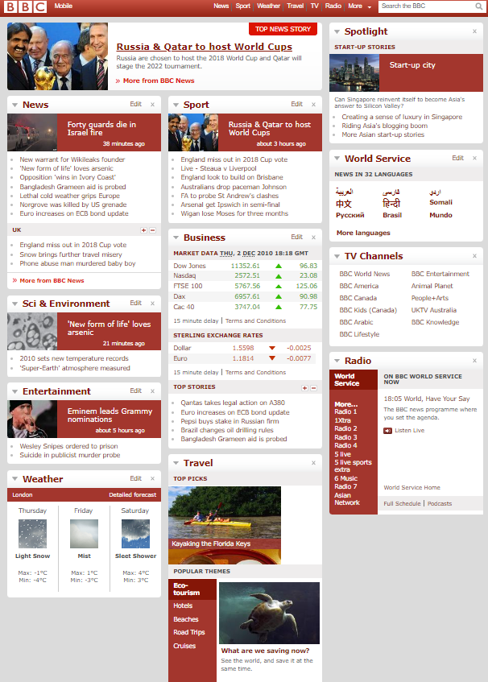
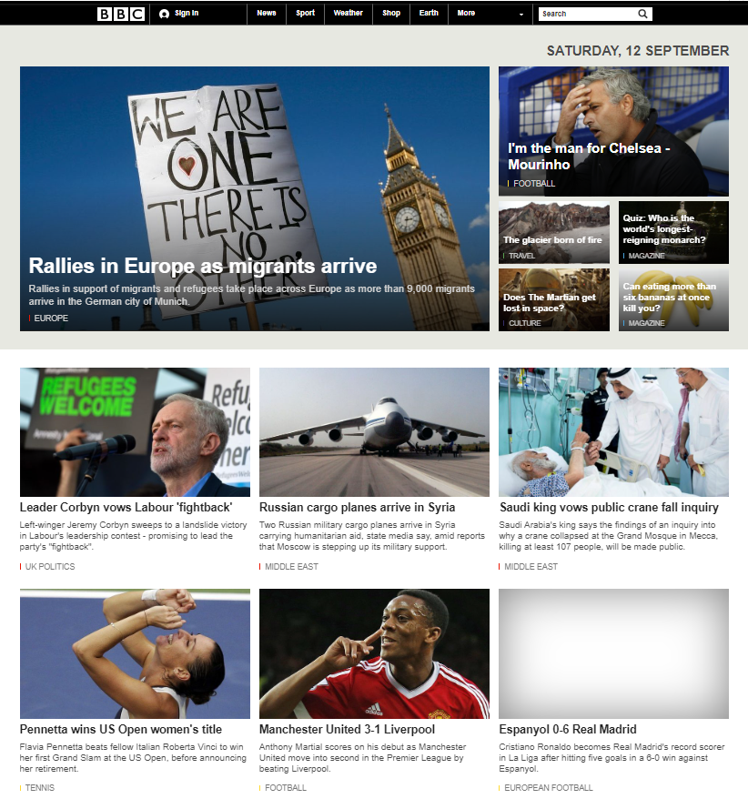
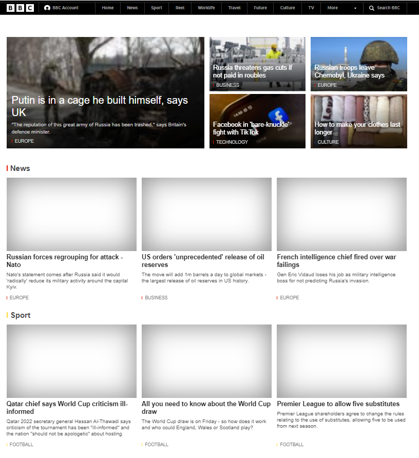

hoje em dia a BBC expandiu a sua zona, contudo eles dominam boa partido dos estados da Europa, Oceania e das Américas. A princípio a BBC ONLINE era simplesmente um website de informações local, ofertando unicamente informações do Reino Unido.
O objetivo do site mudou significativamente ao longo dos anos. Em 2000, todas as notícias receberam mais ou menos o mesmo nível de destaque, mas quando chegamos ao 5º ano já podemos ver uma melhoria na forma como as notícias são organizadas. O site poderia utilizar uma linguagem mais coloquial, direta e de fácil compreensão, livre de artigos longos e de difícil leitura. Também poderíamos fazer uso de personagens famosos dando essas notícias em diálogos curtos.
O site estava muito poluído, não centralizado, e não havia ênfase em nada. Não houve nenhuma notícia que se destacou e foi muito fácil se perder na leitura. Existe um campo de busca mas está tão escondido que passa despercebido.
Em 2005, o site ainda estava poluído, tudo muito próximo, o que facilita se perder ao ler o conteúdo. A barra de pesquisa ainda está escondida em um local discreto.
Em 2010, havia um sistema de hierarquia implementado nas notícias, mas tudo ainda estava “junto”.
Em 2015, o sistema hierárquico foi implementado efetivamente declarando o que é realmente importante de forma organizada por temas e diferentes tipos de conteúdo; no entanto, todas essas informações ainda são compactadas com pouco espaço não utilizado entre os artigos.
Em 2022, pode haver algum tipo de filtragem no canto superior esquerdo de cada artigo ou mesmo abaixo dessas seções dentro do próprio artigo
|  |  |  |  |  |
|---|---|---|---|---|
| 2000 | 2005 | 2010 | 2015 | 2022 |